O continente africano possui uma grande variedade de línguas, costumes e religiões. Trajes pinturas corporais, tecidos e adornos. São marcas da identidade de cada grupo. Os povos do continente africano costumam usar trajes, pinturas corporais, tecidos e adornos, conforme as identidades de seus devidos grupos. Geralmente as pinturas são usadas em cerimônias, para enfeitar o corpo ou para exibir o estilo de sua tribo, todas as pinturas tem um significado diferente.
A vestimenta africana tradicional é o traje usado pelos povos nativos do continente, por vezes substituída por roupas ocidentais introduzidas pelos colonizadores europeus. Ao nordeste da África, particularmente no Egito, a vestimenta foi influenciada pela cultura do Oriente Médio, como a Gellabiya presente nos países do Golfo. Contrariamente a noroeste onde a influencia externa foi menor, as roupas preservam as suas características próprias.
O Brasil, como país plural de referências e costumes culturais, sofreu influência das diversas culturas que para aqui vieram durante o período de colonização, essa influência ocorreu também na nossa moda. As pessoas escravizadas trazidas para o país influenciaram nossos hábitos e costumes, alimentação e também a moda, tendo referências até hoje.
Os hábitos e costumes dos negros foram se estabelecendo aos poucos no país, e com passar dos anos firmou-se a cultura chamada afro brasileira. A moda com referências desta cultura começou a ter mais força a partir dos anos 90, quando surgiram meios de comunicação voltada para o público preto e sua história, esta moda foi construída baseada em nosso clima tropical e tem grande atuação nas periferias, baseada nos gostos do povo preto, mas também sendo possível ser usada por povos de diferentes etnias.
A cultura africana é marcada pelo uso de variadas cores, estampas e produtos feitos a mão, isto é fácil de ver a referência em nossa moda. Mas você sabe quais são as tendências que vão além dessas referências que receberam influência da cultura africana? Vem que eu vou te contar algumas delas que usamos muito no nosso país e muitas vezes nem sequer sabemos!
Durante o período escravocrata os negros produziam suas próprias roupas e com o passar do tempo essas roupas foram também usadas pelo colono. O produto que eles tinham acesso era um algodão grosso, que não passava pelo processo de tingimento e, a partir de estudos, foi percebido que neste período iniciamos a produção em massa, já que existiam moldes de diferentes tamanhos para fazer as peças. Hoje, na cultura brasileira e mundial a camiseta branca com calça de linho é um look que atrai muitos usuários.
COMO SÃO AS ROUPAS AFRICANAS?
BREVE RESUMO: As roupas tradicionais africanas têm cores brilhantes e tecidos vivos, variando em regiões. As fibras duráveis e naturais são predominantes, porque elas deixam o corpo respirar, e mantém o corpo confortável em dias mais quentes. A seda é um famoso tecido, assim como o algodão egípcio. Os boubous e grandes boubous são geralmente feitos de damasco tingido e são bordados com designs elaborados. Anangos e pequenos boubous podem ser feitos de tiras de pano, feito de tecidos coloridos que são costurados juntos. Dizem que cada cor simboliza um aspecto da cultura africana. Tingimento é uma das técnicas africanas criada pelos Tuaregs, uma tribo do norte da África. Os tecidos feitos por esse processo simbolizam a fertilidade.
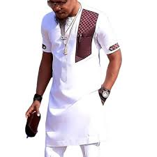
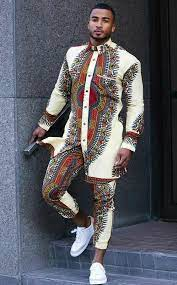
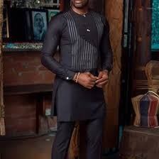
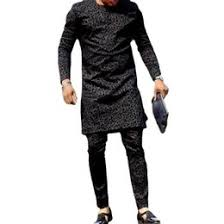
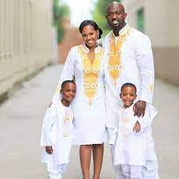
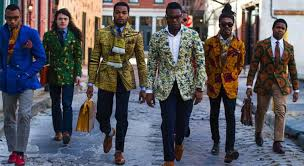
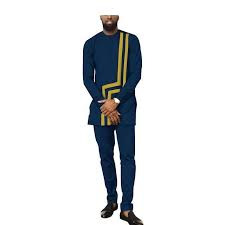
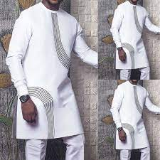
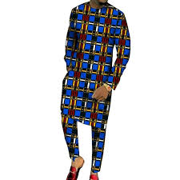
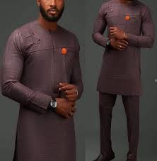
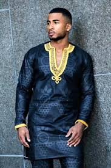
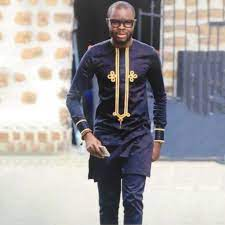
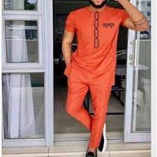
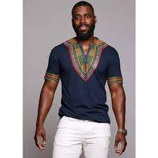

 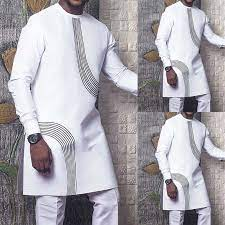
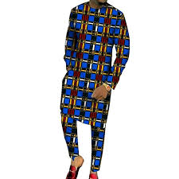
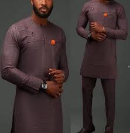
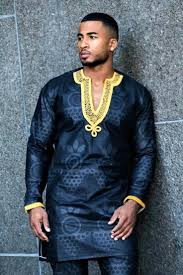
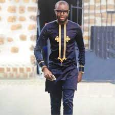
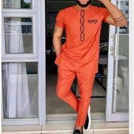
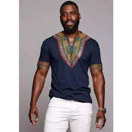
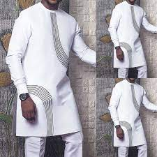
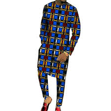
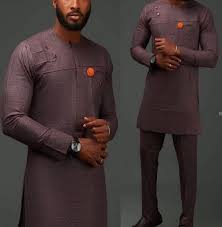
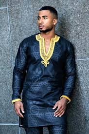
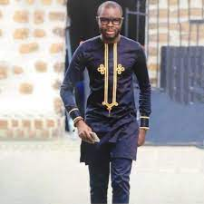
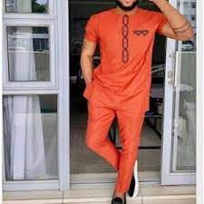
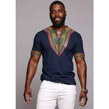